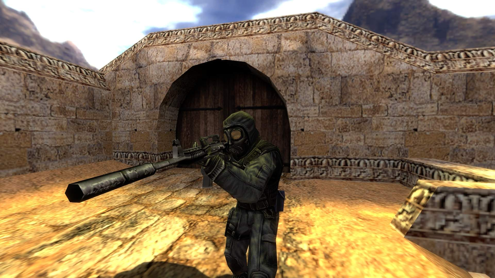
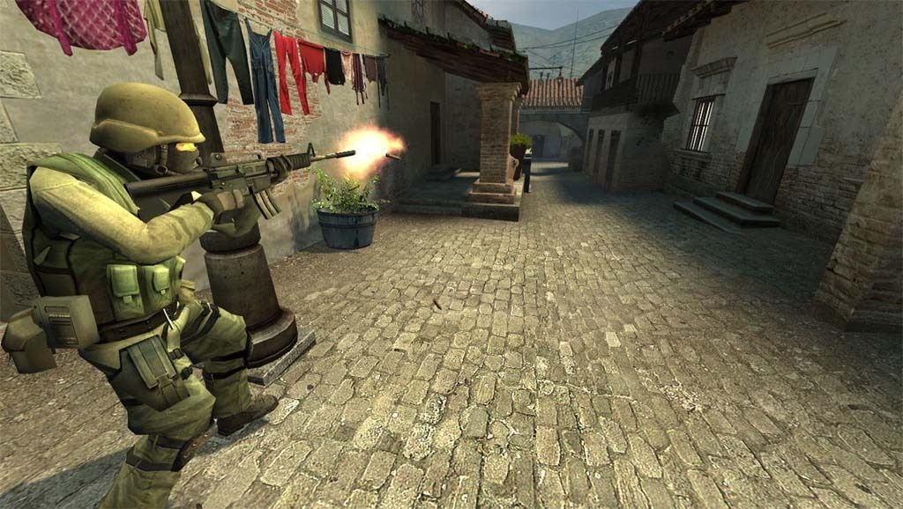
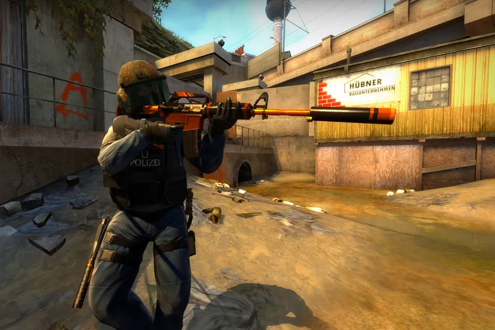

De que trata
Counter-Strike es un videojuego de disparos en primera persona multijugador (ya sea en LAN o en línea)
Se trata de dos equipos, el equipos terrorista (TT) y el equipo antiterrorista (CT).
Sus objetivos varian dependiendo la situacion o el mapa en el que se juegue .Lo mas comun es el de plantar y/o desactivar la bomba, donde el equipo terrorista tiene como objetivo eliminar al otro equipo y/o hacer estallar el C4 .Por el otro lado el equipo antiterrorista tiene como objetivo eliminar al los terroristas o en caso de que hayan plantado la bomba (C4) desactvarla antes de de que se cumplan 25 segundos ya que de otra manera explotaria.
Hambos equipos cuentan armas distinas (aunque algunas iguales).
Con cada ronda ganada adquieren plata para comprar armas mejores con las que al hacer mayor daño al oponente hace mas facil su eliminacion.
Son 30 partidas donde el primero que lleuge a la partida numero 16 gana, aunque pueden empatar llegando hambos equipos 15; y cada ronda tiene una duracion de 3 minutos, lo que fueza a los terroristas a no campear.
Breve Historia



| Fecha de lanzamiento |
Nombre del titulo |
Plataforma |
Empresa |
| 2000 |
Counter-Strike |
PC/XBOX |
Microsoft Game Studios |
| 2004 |
Counter Strike: Condition Zero |
CD-ROM/Steam |
Valve Software |
| 2005 |
Counter Strike: Source |
CD-ROM/Steam |
Valve Software |
| 2012 |
Counter Strike Global Offencive |
Steam |
Valve Software |
El primer Counter-Strike fue publicado en 1999 como mod de Half-Life. A medida que progresaba desde una beta hasta la versión completa, Counter-Strike refinó la clásica forma de jugar que ha llegado a definir los shooters competitivos y produjo una dedicada comunidad que lleva siguiendo el juego desde hace más de dos década.
A través de las versiones (1.6, Source y Global Offensive), Counter-Strike ha sido el estándar de referencia de facto de la habilidad del jugador. Equipos de todo el mundo demuestran constantemente su habilidad y estrategias en torneos locales, regionales e internacionales.
Mas alla de los cambios de graficos y de de fisicas, el juego cada vez se volvia mas y mas tecnico, hasta llegar al dia de hoy donde en cada equipo profecional estudian los mapas.
Los jugadores profesionales de Counter-Strike se han convertido en leyendas dentro de la comunidad internacional de amantes de los videojuegos. Este hermoso juego sigue siendo referente de la gran mayoria de shooters hasta el dia de hoy y claramente es conciderado uno de los mayores juegos de culto de la historia.